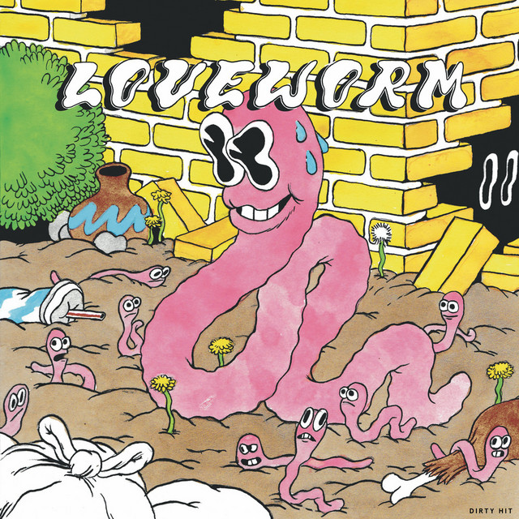
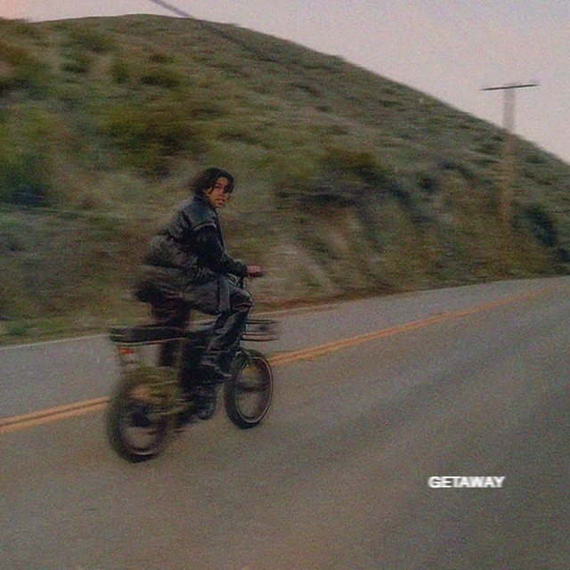
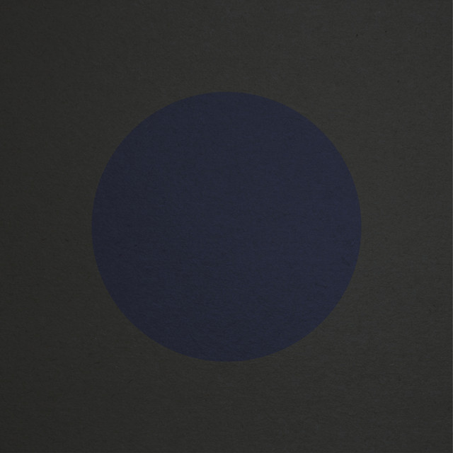
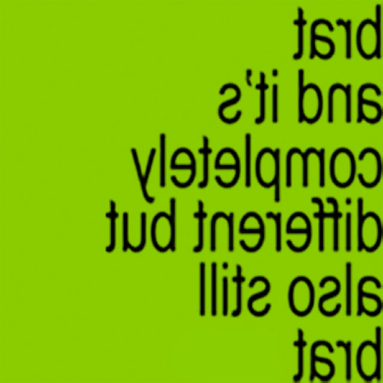
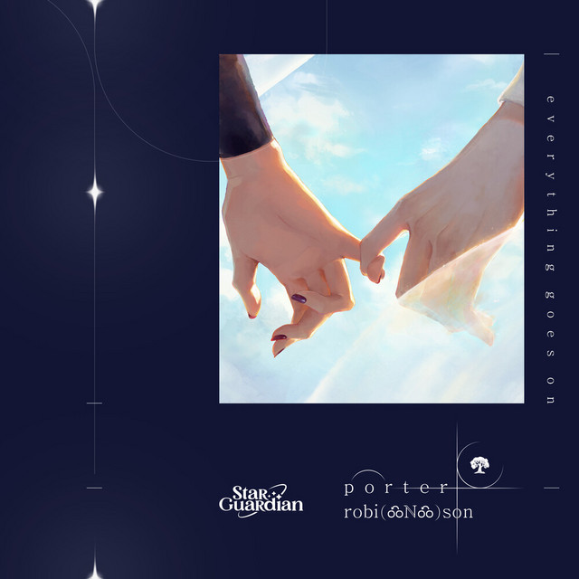

my favorite songs
turn sound on, then hover over a cover to hear a preview. click to open in spotify.
-
the swanyo-yo ma & kathryn stott
-
baby blue moviecigarettes after sex
-

sorenbeabadoobee
-

dirty dancerorion sun
-
posing for carsjapanese breakfast
-

wherever you gobeach house
-
poster boy2hollis
-

everything is romanticcharli xcx & caroline polachek
-

everything goes onporter robinson
-
她刘宇宁 liu yuning